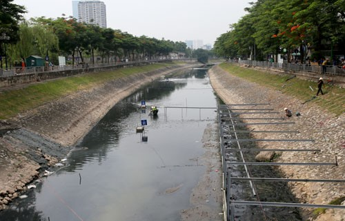

Water - Esential platform of life.
What is clean water?
Talk about water, we must all think of something inseparable from our daily lives, such as air to breathe, food to eat ... As we all know,
water makes up more than 70% of muscle weight. The human body, which is an important component of metabolism and is a solvent that dissolves
substances in the body. Water is important not only to humans but also to life on this earth, just looking at the rare life in the harsh arid
Sahara desert, we can see how important of its.
People need water to use and live, but must be water of quality assurance. So what is clean water? Drinking water or clean water means
water of a minimum purity so that humans or animals or plants can drink, consume, absorb or use it, without the risk of immediate or
long-term harm long.
The clean water that we are using nowadays is underground water, rainwater, tap water, which is treated by filtered system, bottled water.
However, the clean water source in Vietnam and in the world is currently in an alarming situation due to exhaustion and pollution, and this is
a big problem that needs attention of all humanity.
And let's see in Vietnam what the current water problem is like.
Current situation of water resources.
Currently, you and your family still use clean, adequate and quality clean water? If so, congratulations that you are among the lucky people
to have access to clean water in Vietnam, the rest there are many people who are using water that is not up to standard standards, even in many
places where water is scarce. clean for daily living. However, many people who have access to clean water are wasting water resources.
Read more...
Consequences of water pollution.
Surely the consequence of polluted clean water is that it will only be seen before us right before our eyes:
Conswquences to human health.
 Water borne disease
Water borne disease
The polluted water sources that have high metal toxicity such as mercury, lead ... will cause symptoms such as vomiting, headache, vomiting, blood,
and if infected too much, it will lead to cancer. If there is too much lead, it will affect the brain. And water pollution may also contain organic
compounds of pesticides and herbicides with high carcinogenic potential. What's more in the polluted water, there are also extremely harmful bacteria
that cause diseases like scabies mites ...
Part of the contaminated water will enter the groundwater, it will seriously affect the groundwater, some surface water pollution will be very
dangerous if people wash clothes and use.
Read more...
Cause of water pollution.
By human.
Every day, a large amount of domestic waste from residential areas, factories ... contains waste in daily life and sanitation of people. discharged into the environment without treatment.
The basic component of domestic wastewater is biodegradable organic substances. The population is growing, the problem of waste discharge and domestic wastewater are difficult to control
in the cities. These diseases are therefore conditionally spread, causing environmental pollution.

Human throw garbage into the sea.
People are using wasteful clean water.
Read more...
Solutions to save the water.
Through the aforementioned issues on the status of water resources, the protection of water resources is an urgent issue that can determine human life in the future. Therefore, we need to act now to save lives in the future.
Currently in Vietnam, there are programs and ways to treat dirty water as follows:
The Vietnamese government is cooperating with Japan to clean the To Lich river in the center of Hanoi city.

The To Lich river section is being gathered to dispose of sludge.
Read more...